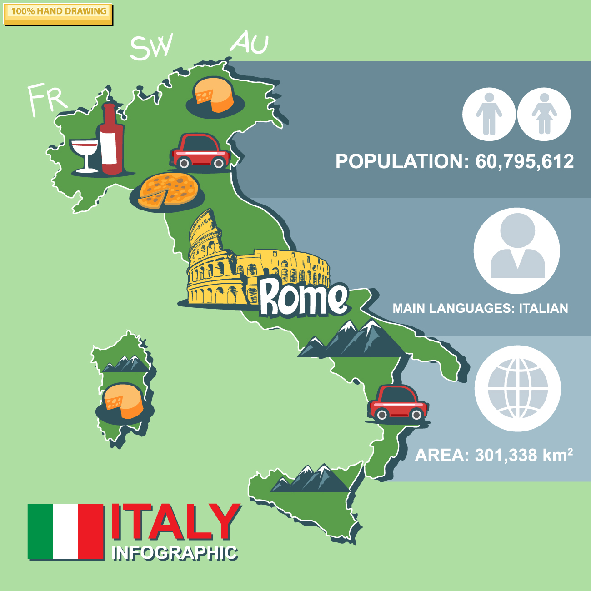

Італія – перлина Європи
Загальні відомості
Італія – це країна в Південній Європі, яка славиться своєю культурою, історією та природною красою. Вона розташована на Апеннінському півострові та омивається Середземним морем. Столиця країни – Рим, місто з багатовіковою історією.
Основні факти про Італію:
- Столиця: Рим
- Офіційна мова: італійська
- Населення: приблизно 60 мільйонів осіб
- Валюта: євро (€)
Культурна спадщина
Італія є батьківщиною таких видатних діячів, як Леонардо да Вінчі, Мікеланджело та Данте Аліг'єрі. Її міста наповнені культурними пам'ятками та музеями.
Найвідоміші пам'ятки:
- Колізей у Римі
- Пізанська вежа
- Собор Святого Марка у Венеції
- Помпеї – зруйноване місто античності
Італійська кухня
Італія відома своєю смачною кухнею, яка популярна в усьому світі. Її страви відрізняються натуральними інгредієнтами та багатством смаків.
Популярні страви:
- Піца (особливо «Маргарита»)
- Піца (особливо «Маргарита»)
- Тірамісу – традиційний десерт
- Еспресо та капучино